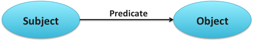
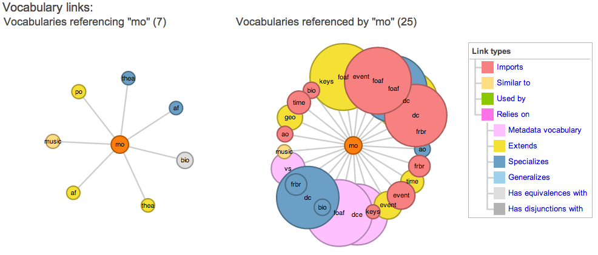

New data may be initially authored in linked data format. However, often data of interest may already be stored in some alternative format. The most common formats are:
Several tools have been developed to support data extraction from these sources. We will look at a number of these in the final sections of this chapter. OpenRefine is a tool for translating spreadsheet or tabular data into linked data. R2RML [4] is a W3C recommendation for specifying mappings between relational databases and linked data. A number of tools exist to support extraction of data from free text including GATE, Zemanta and DBpedia Spotlight.
The aim of all these tools is to allow disparate, possibly messy data sources to be viewed in terms of the RDF data model. As described in chapter 1, RDF represents knowledge in the form of subject-predicate-object triples. The subject and object are the nodes of the triple. Nodes represent the concepts or entities within the data. A node is labelled with a URI, blank node or a literal. Relations between the concepts or entities are modelled as arcs, which correspond to predicates within the data model. Predicates are expressed by a URI.

Figure 4: An RDF Subject Predicate Object triple shown graphically.
As described above, Linked Data principle number 1 states that URIs should be used as names for things. URIs can be used to name both nodes and arcs within RDF triples. More specific guidance can be found on how to design effective URIs. These are referred to as Cool URIs. The guidelines for the design of Cool URIs [5] can be summarised as follows:
Vocabularies model concepts and relationships between them in a knowledge domain. These can used to classify the instance-level nodes expressed in the RDF triples. You should avoid defining your own vocabulary from scratch unless absolutely necessary. Try to make use of (and therefore link to) well-known vocabularies that are already available. A large number of vocabularies are available as Linked Open Data. Many can be discovered through the Linked Open Vocabularies (LOV) dataset [6]. Using LOV you can free text search for vocabularies (for example vocabularies related to the term “music”) and filter the results according a number of facets such as the associated domain (e.g. science, media) of the vocabulary.
LOV also allows a number of vocabularies to be visualized in terms of how interconnected they are with other vocabularies. For example, we can see that the Music Ontology (referred to as “mo” in the figure) references 25 other vocabularies, the principal ones including Friend Of A Friend (FOAF) [7] and DCMI Metadata Terms (dcterms) [8]. FOAF is useful in this context at it provides a way of describing the people who feature as music artists. For example, FOAF can be used to represent their name, gender and contact details. The namespace dcterms can be used to describe core features of the products of music artists (i.e. albums and tracks) such as their title and description.
The Music Ontology is itself referenced by seven other vocabularies in the LOV dataset. These visualizations help in gauging how widely used a vocabulary is and how it aligns with other available vocabularies.
Other lists of well-known vocabularies are available. The W3C SWEO Linking Open Data community project maintains a list of the most commonly used vocabularies [9]. The Library Linked Data Incubator Group maintains a list of vocabularies related to the linked open library data [10].

Figure 5: Analysis of the Music Ontology [11]